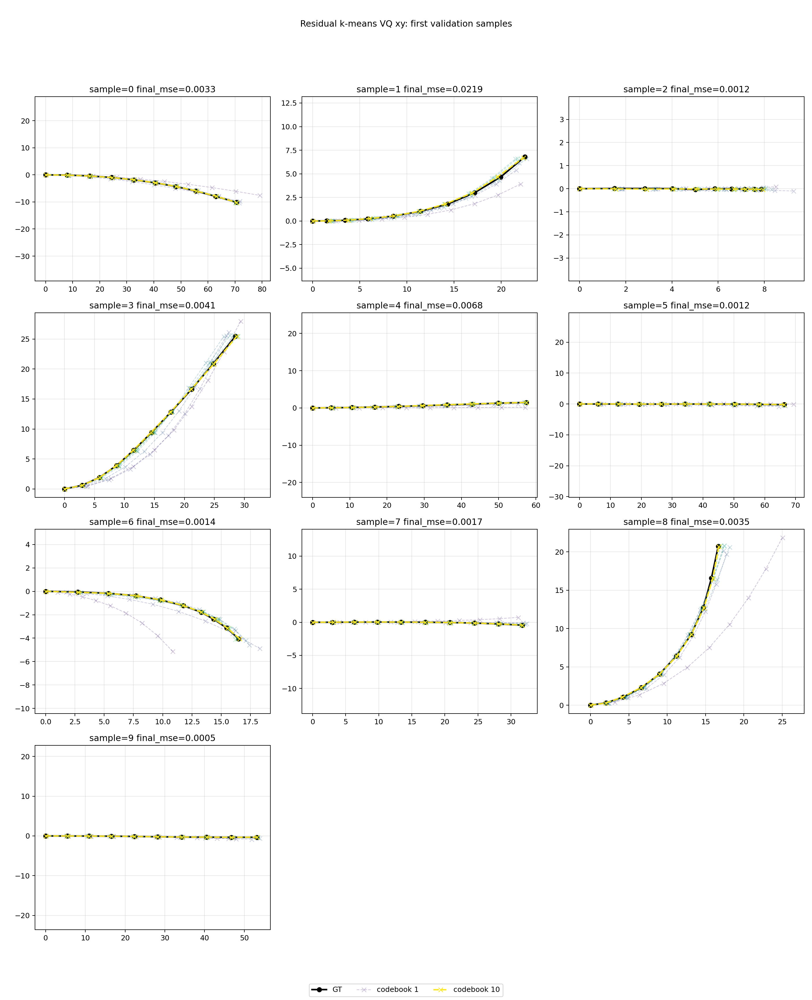
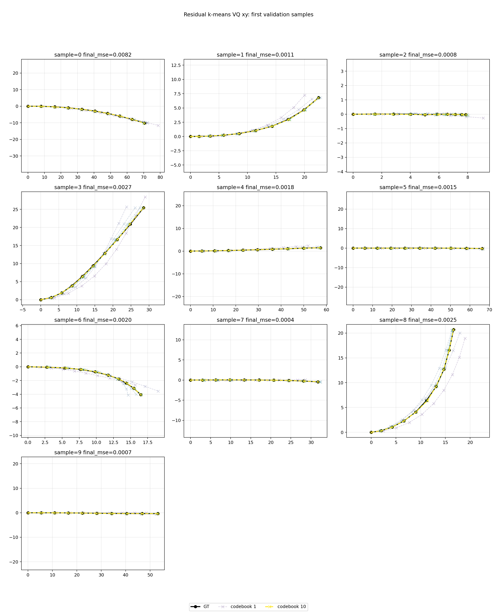
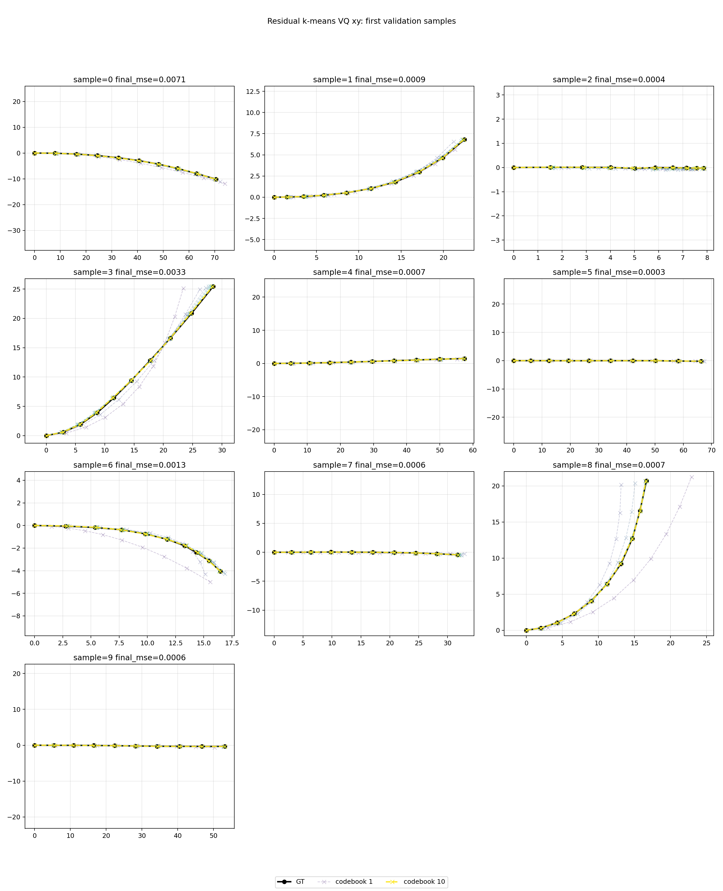
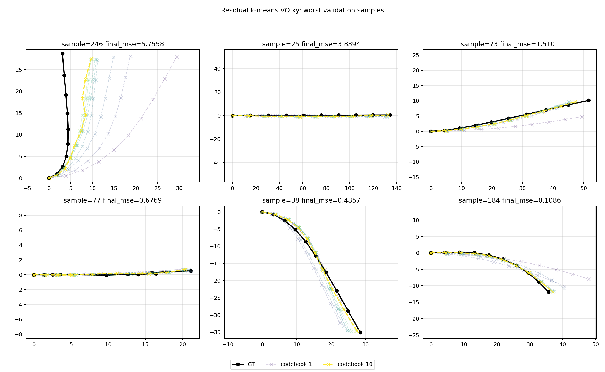
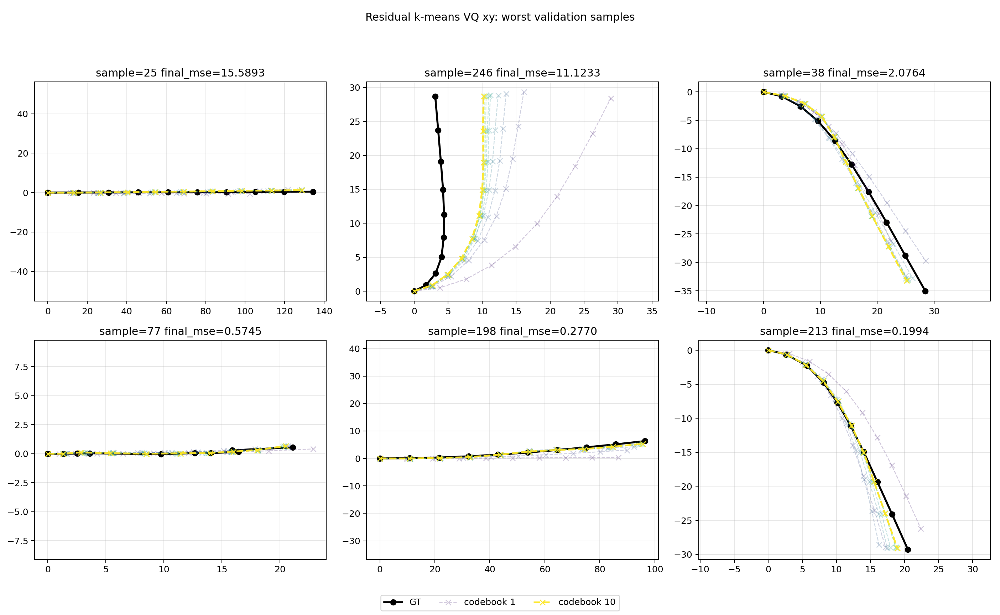
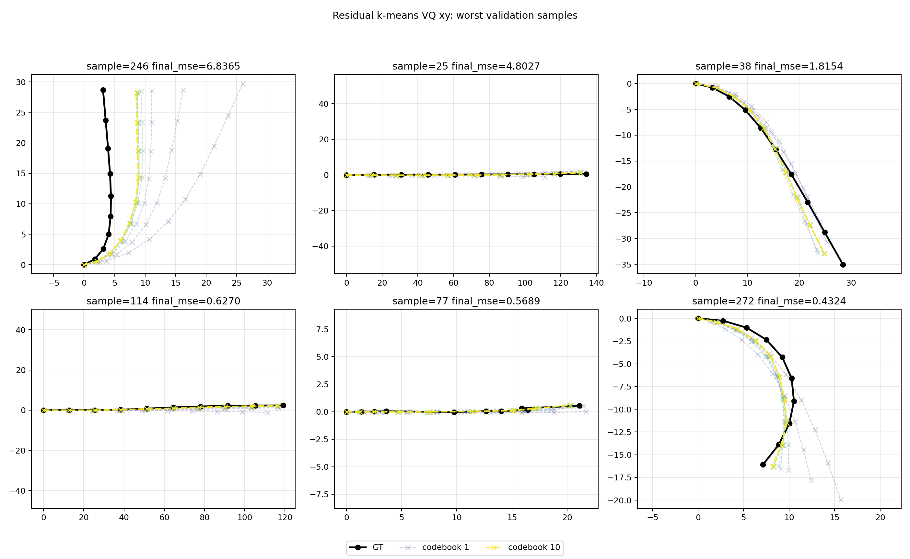

Residual k-means RVQ was evaluated with 10 sequential full-trajectory tokens in local XY space. The key change versus the learned RVQ run is that every token codebook is fit directly on the remaining full-sequence reconstruction residual, then validation uses nearest-code residual search. This removes the learned encoder/decoder failure mode and tests whether the discrete residual representation itself has enough capacity.
On this split, all three residual k-means RVQ settings beat the naive 71x71 per-step XY binning baseline on p90 and p99 error. The 32-code run has the best MSE; the 64-code run has the best p99 and first-3s p99.
| Method | Tokens | Codes per token | Avg used codes | XY MSE | XY MAE | P90 error | P99 error | Max first-3s P99 | P99 by second |
|---|---|---|---|---|---|---|---|---|---|
| Naive XY bins 71x71 | 10 fixed | 5041 | - | 0.190683 | 0.273484 | 0.660589 | 0.831353 | 0.834026 | 1s=0.830951 2s=0.834026 3s=0.833140 4s=0.823479 5s=0.839960 |
| Residual k-means RVQ XY | 10 | 32 | 31.7 | 0.041374 | 0.056301 | 0.114851 | 0.531381 | 0.610262 | 1s=0.329356 2s=0.610262 3s=0.445177 4s=0.574628 5s=0.876712 |
| Residual k-means RVQ XY | 10 | 64 | 62.9 | 0.089504 | 0.054146 | 0.090054 | 0.493888 | 0.518499 | 1s=0.310853 2s=0.391478 3s=0.518499 4s=0.630856 5s=0.988360 |
| Residual k-means RVQ XY | 10 | 128 | 112.9 | 0.048961 | 0.049838 | 0.090489 | 0.616368 | 0.655841 | 1s=0.404331 2s=0.626037 3s=0.601388 4s=0.652942 5s=0.938452 |





